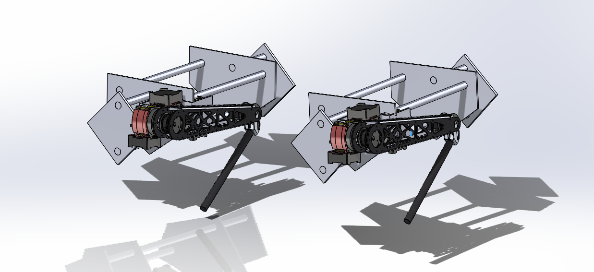
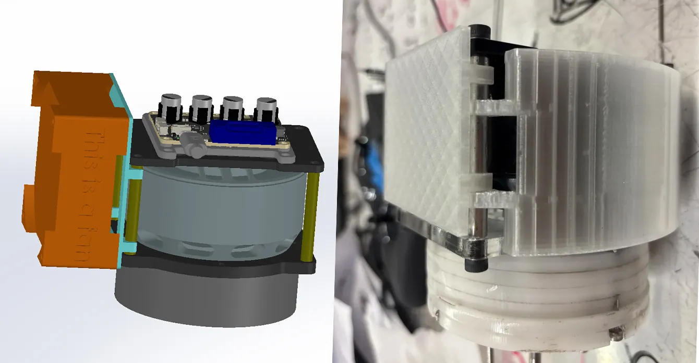
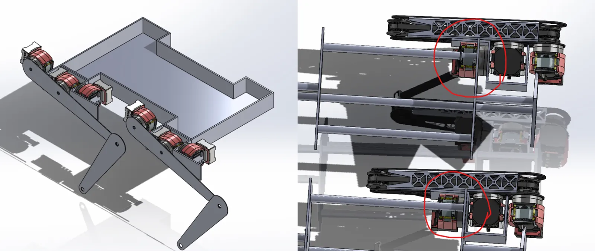
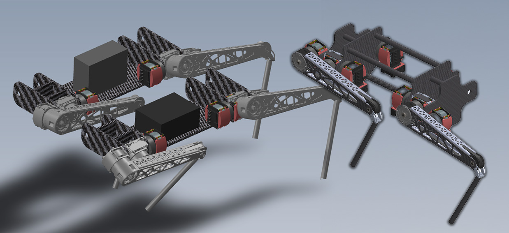
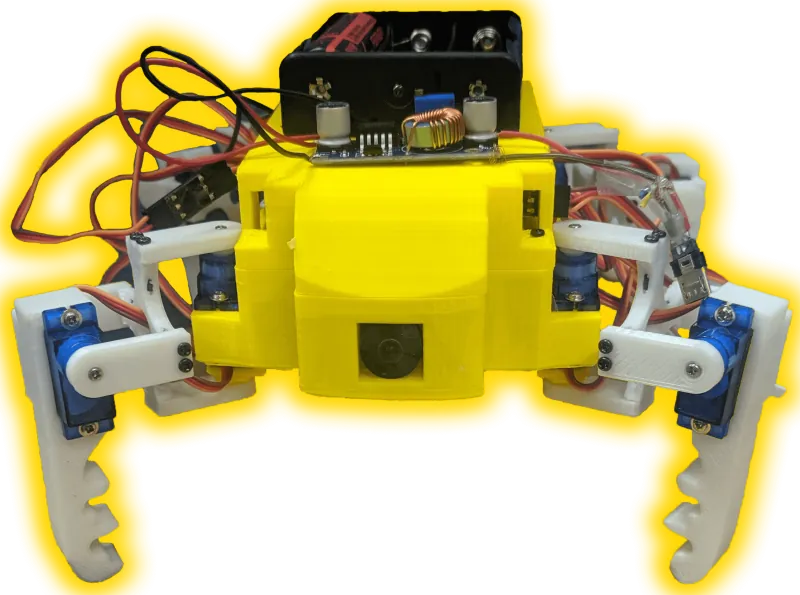

Overview
The Quadrupeds project is a new project at Roboclub.
We are designing and building an quadruped robot from scratch - everything except the motors, electronics and a ROS2-based autonomy stack.
In this project, we extensively analyzed the positioning of the motors to optimize the robot's movement capabilities, balance, and energy efficiency. Gear ratios were calculated to maximize torque output while minimizing mechanical interference and weight distribution issues.

Motor cooling
My initial design focused on creating a prototype for a snapping fan holder integrated into the motor cooling system. The objective was to develop a housing around the motor, along with a fan plate, to ensure optimal airflow. The fan effectively dissipates heat and maintaining a stable operating temperature, thus enhancing the motor's overall performance
Chassis and leg configuration
Initial chassis design and leg configuration, showcasing key considerations for actuator placement and movement. The images highlight two different actuator positions, showing the superiority of the upper configuration due to a more evenly distributed load.


Chassis designs
Comparison of two possible current chassis designs - we are discussing overall weight balance, whether to make the main body out of cf tubes or plates.
Last updated: 2024 Nov 23
Similar work

Cheap Opensource Robot Dog (CORD)
Open-source quadruped robot platform designed for educational purposes and affordable robotics research.

WYBot
Versatile robotic platform designed for multiple applications, featuring modular design and adaptive control systems.
Simon
Autonomous driving in the forest. Through fusion of 2D and 3D perception and proprioceptive sensors, wheeled robots will effectively and efficiently navigate through heavily vegetated environments.